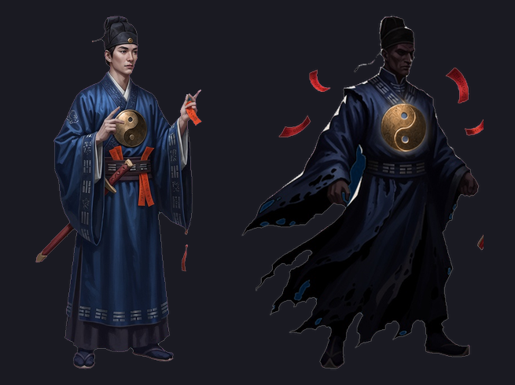
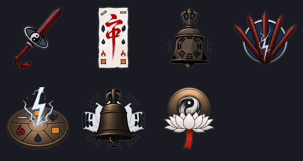
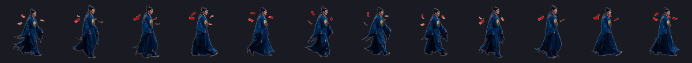
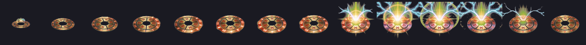
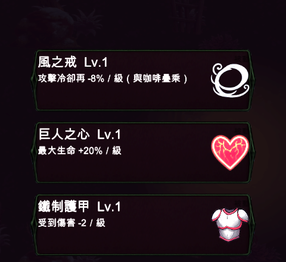

手搓廣告遊戲選集 · 吸血鬼復仇 · 道士完成
陣法不辨識形狀，只問軌跡有沒有自己交叉圍出面積——繞得歪也算。 實測繞五圈剛好走完金水木火土。殘符我決定留著，理由在下面。
道士做完了——天賦（殘符＋陣法）、三把武器與進化、專屬職業因果法師、美術全套。 照你說的全部按我的建議走。
每 46px 記一個軌跡點（上限 60 點 ≈ 最近 6 秒），新線段跟前面的測相交， 交到就用鞋帶公式算面積、射線法挑出圈內的敵人。繞得歪也算，只要繞得起來。
實測（讓搖桿方向連續轉一圈，就是玩家拉怪時本來會做的事）：
第 1 圈 → 成陣 1（metal） ✓ 第 4 圈 → 成陣 4（fire） ✓
第 2 圈 → 成陣 2（water） ✓ 第 5 圈 → 成陣 5（earth） ✓
第 3 圈 → 成陣 3（wood） ✓
五行順序：metal → water → wood → fire → earth ✓ 金水木火土
| 陣 | 效果 | 類型 |
|---|---|---|
| 金 | 圈內一次高額斬擊 | 傷害 |
| 水 | 拖向重心 ＋ 大幅減速 | 傷害／控場 |
| 木 | 回復最大生命 22% | 加成 |
| 火 | 圈內留下燃燒地帶 | 傷害 |
| 土 | 受傷倍率 ×0.65，持續 6 秒 | 加成 |
護欄：最小／最大面積、6 秒冷卻，而且效果隨面積遞增—— 小圈幾乎沒回報，這是「繞得好才有」而不是「繞就有」的唯一防線。
直線跑 3 秒：符 0 → 12 張 ✓
敵人踩上符：血 467 → 449 符 12 → 10 張 ✓ 踩到會炸
理由是實機看過之後才敢說的：兩層在畫面上完全不會混淆。 殘符是一串紅色的符沿著你走過的路亮起來（連續、低傷、背景音量）， 陣法是一圈五行色的環一次爆開（punctuated、高傷、有存在感）。 玩家不會搞混「哪個是哪個」，也不會覺得資訊過載。
而且殘符順便就是陣法的視覺化——你留下的那一串符就是你的軌跡， 玩家看得到自己剛剛繞出了什麼形狀。砍掉殘符的話，陣法會變成 「莫名其妙就成陣了」，反而更難懂。
| 武器 | 家族 | 進化 |
|---|---|---|
| 桃木飛劍 | 投射 ＋ 追蹤 | 五雷斬（七把齊出） |
| 鎮煞符 | 地帶 ＋ 延遲 1 秒生效 | 五雷正法陣 |
| 金剛鈴 | 新星 ＋ 定身 | 大梵音（定身 1.3 秒） |
ArmDelay 是唯一的新欄位。實測：
符落地 → 開始扣血的間隔 = 0.78~1.08 秒（設計 1.00） ✓
鎮煞符是陷阱不是傷害，所以延遲期間必須看得出來：符陣由暗轉亮、 緩慢旋轉、逐漸放大，生效那一刻才轉亮並開始播火。 沒有這段回饋的話，延遲生效在手感上就只是「沒打中」。
延遲 +0.8 秒、傷害 ×1.6、生效瞬間把周圍敵人拉向中心——三件事一起發生 才是「業報」，拆開就只是數值調整。
業報下的延遲 = 1.81 秒（設計 1.80） ✓
⚠️ 一個實作上的判斷：地帶的壽命是從生效那一刻起算，不是從落地起算。 從落地起算的話，那 0.8 秒會直接從地帶的有效時間裡扣掉—— 「更強」的代價變成「更短」，而那不是設計要的。

左邊是第一版（乾淨、對稱、縮小會變成一條藍色長方形）， 右邊是照你同意的四點重生的：破布輪廓、飄浮符咒、拉高對比、太極銅盤放大當焦點。 剪影明顯打散了。

太極給飛劍（環繞軌跡）、五行給符（五個元素標記）、八卦給鈴（音波圈）—— 一把分一個，所以三把在圖示上就分得開，而且視覺語彙跟機制是同一件事。


這支剛好是「轉進來 → 蓄力 → 爆發」，正好當延遲生效的視覺，不用另外做。
